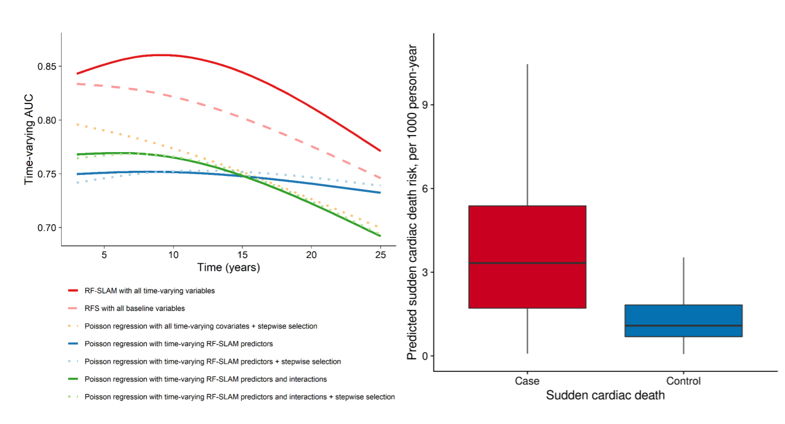

Predicting of Sudden Cardiac Death Risk With RF-SLAM
Why interested in Sudden Cardiac Death?
Sudden cardiac death (SCD) is a sudden, unexpected death caused by loss of heart function (sudden cardiac arrest). Sudden cardiac death is the largest cause of natural death in the United States, causing about 325,000 adult deaths in the United States each year.
What methods did we use to predict such a devastating disease?
We used RF-SLAM because it is a novel statistical and machine learning method that improves risk prediction by incorporating time-varying information and accommodating a large number of predictors, their interactions, and missing values.[Read more]
What data did we use?
We used The Atherosclerosis Risk in Communities (ARIC) study. ARIC is an ongoing longitudinal cohort of 15,792 middle-aged men and women recruited from four communities in the U.S.: Forsyth County, North Carolina; Jackson, Mississippi; suburbs of Minneapolis, Minnesota; and Washington County, Maryland at 1987-1989 (visit 1). The 3 short-term follow-up visits occurred approximately three years apart: 1990-1992 (visit 2), 1993-1995 (visit 3), 1996-1998 (visit 4). 82 time-varying variables (demographics, lifestyle factors, clinical characteristics, biomarkers, etc.) collected at four visits over 12 years (1987-98) were used as candidate predictors.
What's the prediction accuracy?

We accessed the predictive accuracy by comparing the area under the receiver operating characteristic curve (AUC) through out-of-bag prediction for ML models and 5-fold cross validation for the Poisson regression models. Compared to different Poisson regression models (AUC at 6-year ranges from 0.77-0.83), the ML model improved prediction (AUC at 6- year 0.89). Using the top ML predictors to select variables, the Poisson regression model AUC at 6-year was 0.77, suggesting that the non-linear dependencies and interactions captured by ML are the main reasons for its improved prediction performance.